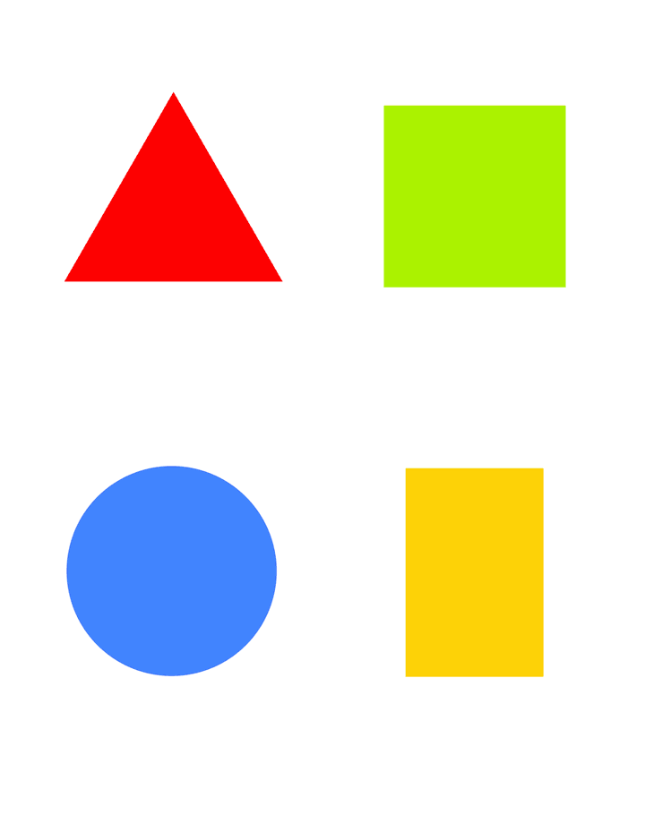

| Previous |  | Next |
The IDL files are generated by the modeling tools.
To understand this shapes tutorial better, it'll give an overview of
which IDL files are generated.
Below an simplied represenation of the common IDL files. Use the links to view
the file itself.
The following IDL files can be found in Shapes_asm/ports:
module Shapes
{
enum ReturnStatus
{
RETURN_OK,
RETURN_ERROR
};
};
module Shapes
{
typedef sequence ShapeTypeSeq;
module ::CCM_DDS::Typed < ::ShapeType, ShapeTypeSeq>
ShapesConnector;
};
This IDL contains the declaration of the DDS4CCM connector. The used
module is typed.
struct ShapeType {
string color; //@key
long x;
long y;
long shapesize;
};
The ShapeType struct is the the data structure that is send from the
sender to the receiver through DDS.//@key as shown above.
The controller is used to modify the location and the size of the registered
shape. The controller invokes methods on the sender component to establish this.
These methods are part of an interface which the sender should provide. The
controller uses this interface.
The interface declaration is in
Shapes_asm/Shapes_Control_comp/ports/Shapes_Control_obj.idl
The IDL looks like this:
module Shapes
{
interface Control_obj
{
ReturnStatus setSize (in unsigned short size);
ReturnStatus setLocation (in unsigned short x,
in unsigned short y);
};
};
The controller component periodically calls the setSize and setLocation methods
on the sender component.
The component IDL file itself is located in
Shapes_asm/Shapes_Control_comp/src/Shapes_Control_comp.idl
and looks like this:
module Shapes
{
component Control_comp
{
uses Shapes::Control_obj control;
attribute unsigned long rate;
attribute unsigned short max_x;
attribute unsigned short max_y;
attribute unsigned short max_size;
attribute boolean resize_shape;
};
};
The controller uses the Control_obj interface.
The following attributes are used:
The moment the controller invokes setSize or setLocation, the sender translates
the received size and location into the ShapeType struct. After that, it'll
present the updated struct to DDS, by calling write_one on the DDS_Write port.
The IDL file of the Sender component looks like this:
module Shapes
{
component Sender_comp
{
port ShapesConnector::DDS_Write info_write;
provides Shapes::Control_obj control;
};
};
The IDL file is located in
Shapes_asm/Shapes_Sender_comp/src/Shapes_Sender_comp.idl
The Sender uses the DDS_Write port of the DDS4CCM connector. This means that
the Sender is able to write data to DDS.
The Sender provides the Control_obj interface to the Controller component. This
means that the sender component implements the Control_obj interface so that the
controller is able to invoke the provided methods.
The receiver is "listening" to DDS. Once the shape has been
updated by the sender, DDS will invoke a callback method on the DDS4CCM connector
which in turn calls the receiver component and will pass the updated data to
the receiver.
The receiver should provide the DDS4CCM connector with an interface which the
DDS4CCM connector should invoke the moment he gets a callback from DDS.
To establish this, the receiver component IDL should look like this:
module Shapes
{
component Receiver_comp
{
port ShapesConnector::DDS_Listen info_out;
};
};
| Previous | Next |